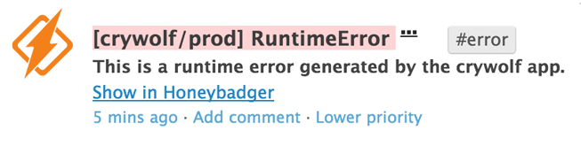

Overview
Connect Honeybadger to Datadog to:
- See errors in the stream, in real time
- Search for errors in your graphs
- Discuss errors with your team
- Be super awesome

Configuration
To capture errors from Honeybadger:
- Open your project settings in Honeybadger
- Click on Alerts & Integrations
- Select "Datadog" as a new integration
- Add your API key:
api key goes here
Every time an exception or outage occurs, it will appear in your event stream.